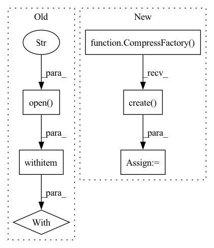

Pattern ID :3486
Before Change
// Extract files to temporary directory and load content
with TemporaryDirectory() as directory:
// Extract tar contents
with tarfile.open( path, "r") as tar:
tar.extractall(directory)
// Load graph backend
self.loadgraph(f"{directory}/graph")After Change
// Extract files to temporary directory and load content
with TemporaryDirectory() as directory:
// Unpack files
compress = CompressFactory().create( "tar")
compress.unpack(path, directory)
// Load graph backend
self.loadgraph(f"{directory}/graph")In pattern: SUPERPATTERN
Frequency: 3
Non-data size: 6
Instances Fragment ID: 13388440
Project Name: neuml/txtai
Commit Name: de8b2ee5991bb513905ec7fe782b8f5ff2ed71c0
Time: 2022-11-01
Author: 561939+davidmezzetti@users.noreply.github.com
File Name: src/python/txtai/graph/base.py
M Class Name: Graph
N Class Name: Graph
M Method Name: load(2)
N Method Name: load(2)
M Parent Class:
N Parent Class:
M File Name: src/python/txtai/graph/base.py
N File Name: src/python/txtai/graph/base.py
M Start Line: 291
M End Line: 297
N Start Line: 291
N End Line: 294
Before Change
pickle.dump(self.topics, handle, protocol=__pickle__)
// Combine output as TAR
with tarfile.open( path, "w") as tar:
tar.add(directory, arcname=".")
def insert(self, documents, index=0):
After Change
pickle.dump(self.topics, handle, protocol=__pickle__)
// Pack files
compress = CompressFactory().create( "tar")
compress.pack(directory, path)
def insert(self, documents, index=0):
Fragment ID: 13388437
Project Name: neuml/txtai
Commit Name: de8b2ee5991bb513905ec7fe782b8f5ff2ed71c0
Time: 2022-11-01
Author: 561939+davidmezzetti@users.noreply.github.com
File Name: src/python/txtai/graph/base.py
M Class Name: Graph
N Class Name: Graph
M Method Name: save(2)
N Method Name: save(2)
M Parent Class:
N Parent Class:
M File Name: src/python/txtai/graph/base.py
N File Name: src/python/txtai/graph/base.py
M Start Line: 320
M End Line: 338
N Start Line: 320
N End Line: 336
Before Change
// Tar files
else:
with tarfile.open( path, f"w:{compression}") as tar:
tar.add(self.path(), arcname=".")
// Save file to cloud storage, if necessary
cloud = self.cloud(config)After Change
os.makedirs(output, exist_ok=True)
// Pack into compressed file
compress = CompressFactory().create( path)
compress.pack(self.path(), path)
// Save file to cloud storage, if necessary
cloud = self.cloud(config) Fragment ID: 13388439
Project Name: neuml/txtai
Commit Name: de8b2ee5991bb513905ec7fe782b8f5ff2ed71c0
Time: 2022-11-01
Author: 561939+davidmezzetti@users.noreply.github.com
File Name: src/python/txtai/embeddings/archive.py
M Class Name: Archive
N Class Name: Archive
M Method Name: save(3)
N Method Name: save(3)
M Parent Class:
N Parent Class:
M File Name: src/python/txtai/embeddings/archive.py
N File Name: src/python/txtai/embeddings/archive.py
M Start Line: 115
M End Line: 135
N Start Line: 111
N End Line: 112